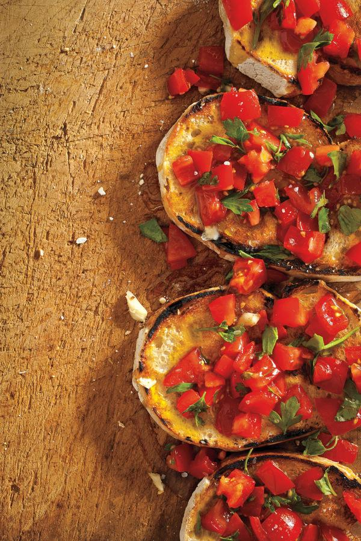

bruschetta con pomodoro

Description
There are endless ways of making bruschetta, but this is our favorite.
The only rule with bruschetta is to use the best olive oil you can find, preferably a cold-pressed variety.
Ingredients
- 4 medium-size ripe tomatoes, coarsley chopped
- 8 frsh basil leaves, chopped
- 1 tablespoon fresh Italian, flat leafed parsely, chopped
- 3 cloves garlic, finley chopped, plus 1 clove garlic, cut in half
- 1/4 cup cold press or extra virgon olive oil
- Kosher salt and freshly ground black pepper
- 4 slices Italian bread, toasted
- Additional cold press or extra virgin olive oil to drizzle on top (optional)
Steps
- In a medium-size bowl, mix the tomatoes. basil, parsley, chopped garlic, and olive oil, and season with salt and pepper
- Rub toasted bread with garlic halves, then top with equal portions of tomato mixture
- Drizzle extra virgin oil on top if desired, and serve immediatley